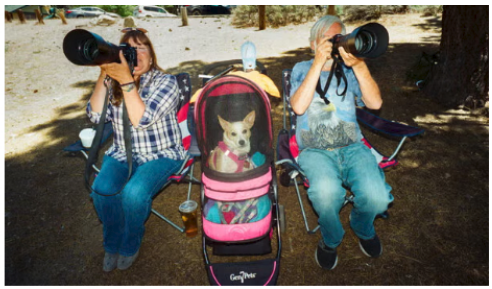

Strike on Gaza Hospital Kills at Least 6 and Injures 20, Rescuers Say
Israel said that Hamas had established a command center at the hospital complex. Hamas said the attack targeted "a civilian medical facility."
2 min read
Journalist's Arrest Adds to Fears Israeli Security Agency Is Being Politicized
4 min read
Abdel Kareem Hana/Associated Press
Got a Tip? The Times offers several ways to send important information confidentially
A Sweaty, Muddy Jungle Trek to a Famed World War II Wreck
Seven Chinese tourists, a dozen villagers and a couple of journalists forded streams and bushwhacked to the downed plane of a Japanese admiral.
25 comments
Matthew Abbott for The New York Times
Michael Carrick Leaves His Role as Manchester United's Head Coach
The U.S. head coach Mauricio Pochettino has emerged as the chosen candidate to replace Carrick. The team has won only one of the last 11 games.
From The Athletic
Carl Recine/Getty Images
Is Air Travel Getting Less Safe?
Experts fear the Trump administration is ignoring the enormous strain on the U.S. aviation system, even as accidents and close calls increase.
28 min read
Takeaways From the Times's Report on Aviation Safety
4 min read
Photo Illustration by Pelle Cass
Live
At Least 8 Dead in Brooklyn Building Collapse, as Crews Scour Rubble
More than a dozen others were injured, some of them critically, when a three-story building in the Flatbush neighborhood collapsed, officials said.
See more updates
Dave Sanders for The New York Times
Pope Leo XIV Goes Home, Meeting Ghosts of His Past
In Peru, where he lived for two decades and became a citizen, the pope was met by President Keiko Fujimori, whose father's policies he had protested.
4 min read
Martin Bernetti/Agence France-Presse - Getty Images
A Diminished Justice Dept. Braces for Fresh Fights After Midterm Loss
The upheaval points to a broader dilemma spurred by the election: whether the department can carry out President Trump's priorities as officials eye the exits.
6 min read
Democrats Face Backlash After Missing Hegseth Impeachment Vote
4 min read
Nathan Howard for The New York Times
Snoopy Lives!
Nearly three decades after the last "Peanuts" comic strip, Charlie Brown and the gang are everywhere, thanks to more than a thousand brand deals.
11 comments
Ted Shaffrey/Associated Press
The Great Read
I Visited Big Bear Lake's Famous Bald Eagles and Found Very Human Shenanigans
My I.R.L. adventures in the strange human world behind the enormously popular eagle cam livestream.
111 comments

Sinna Nasseri for The New York Times
Weather Yaounde, Cameroon
28°
Muggy and gentle breeze.
Full forecast
Source: Tomorrow.io
Forecast Yaounde, Cameroon
Wednesday 28° 21°
Thursday 29° 21°
Friday 27° 20°
Tornado Risk
Some - Philadelphia
Some - Toms River, N.J.
Some - Wilmington, Del.
Forecast for Thursday - Source: NWS
Could $1 Million Get Them the Manhattan Two-Bedroom They Wanted?
A couple tried the suburbs, but decided the city suited their needs
Help! A Broken Toilet Grounded My Plane, and the Airline Won't Cover a Hotel.
Matilda Is Caitlin Clark's Fictional Hero
Opinion
The Editorial Board
Democrats, Take the Deal
145 comments
Interesting Times
Democrats Have Power Now. They Shouldn't Waste It on Woke.
Frank Bruni and Bret Stephens
When Can We Stop Talking About Trump?
8 min read
Ilan Stavans
The Spanish Shylock Problem
4 min read
David Wallace-Wells
The Political Center of Gravity Isn't Trump. It's Obama.
8 min read
Matt Labash
Trump. Miller. Blanche. Jordan. Things Could Get Worse, and They Will Probably.
5 min read
Anand Giridharadas
Jensen Huang Betrayed the Leather Jacket Community
4 min read
Trevor Paglen
I Saw the Future of Mind-Reading
6 min read
Late Night: Desi Lydic Chides Democrats Who Missed Hegseth's Impeachment Vote
"This is huge, someone actually going after Pete Hegseth, and not just for child support!" said "The Daily Show" host.
2 min read
Most Shared
Toyota Sees a U.S. Future for Tiny Trucks With a Devoted Following
227 comments
A Beloved Nurse Was Arrested, Shackled and Hidden in ICE's System
527 comments
Stacy Keach, Actor Who Embodied Hamlet and Mike Hammer, Dies at 85
317 comments
New Research Compares Long-Term Relief From 21 Antidepressants